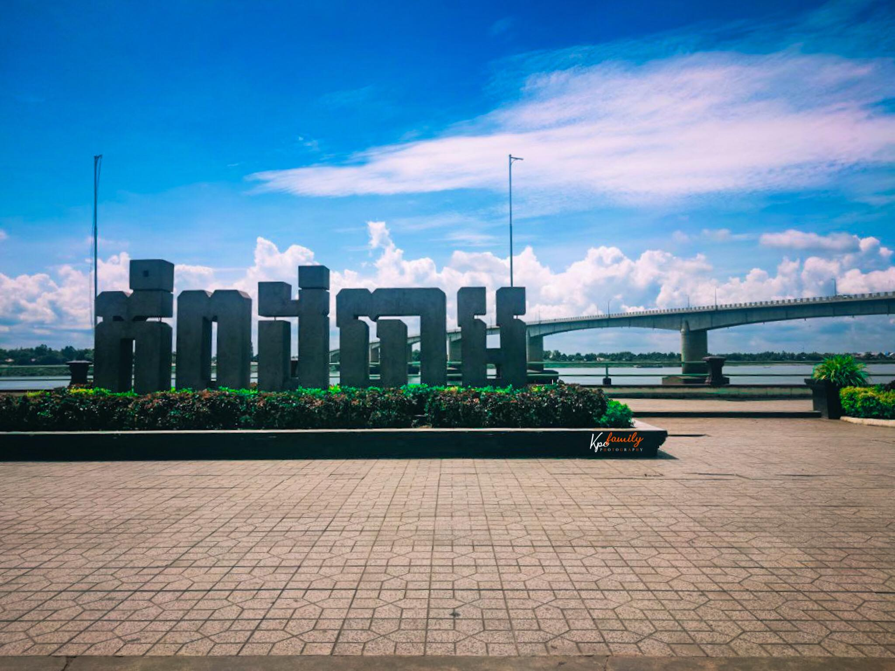

ការពិពណ៏នាអំពី ខេត្តនីមួយៗនៅក្នងប្រទេសកម្ពុជា
ទំព័រដើម
តាកែវ
ភ្នំពេញ
កែប
ព្រះសីហនុ
ស្វាយរៀង
កំពង់ធំ
បាត់ដំបង
ពោធ៏សាត់
សៀមរាប
រតនគីរី
មណ្ឌលគីរី
ក្រចេះ
ត្បូងឃ្មុំ
កំពង់ចាម
ព្រៃវែង
កណ្តាល
ឧត្តរមានជ័យ
កំពង់ឆ្នាំង
កំពង់ស្ពឺ
បន្ទាយមានជ័យ
កោះកុង
ប៉ៃលិន
កំពត
ស្ទឹងត្រែង
ព្រះវិហារ
ទំនាក់ទំនង
ខេត្តកំពង់ចាម

ព័ត៌មានសង្ខេបអំពីខេត្តកំពង់ចាម
> ខេត្តកំពង់ចាម គឺជាខេត្តមួយរបស់ប្រទេសកម្ពុជា ដែលស្ថិតនៅលើដីទំនាបកណ្តាលនៃទន្លេមេគង្គ។ មានព្រំប្រទល់ជាប់ខេត្តកំពង់ឆ្នាំងនៅខាងលិច ខេត្តកំពង់ធំនិងខេត្តក្រចេះខាងជើងនិងឦសាន ខេត្តត្បូងឃ្មុំនៅខាងកើត និងខេត្តព្រៃវែងនិងខេត្តកណ្តាលនៅខាងត្បូង។ ខេត្តកំពង់ចាមត្រូវបានបែងចែកជាផ្លូវការជាពីរខេត្តនៅថ្ងៃទី៣១ ខែធ្នូ ឆ្នាំ២០១៣ ដីទាំងអស់នៅខាងលិចទន្លេមេគង្គនៅតែជាខេត្តកំពង់ចាម នៅដីនៅខាងកើតទន្លេមេគង្គក្លាយជាខេត្តត្បូងឃ្មុំ។ មុនពេលការបែងចែកនេះ ខេត្តកំពង់ចាមបានលាតសន្ធឹងទៅខាងកើតជាប់ព្រំដែនអន្តរជាតិជាមួយប្រទេសវៀតណាម ជាខេត្តធំទី១១ នៃប្រទេសកម្ពុជា ហើយមានប្រជាជនចំនួន ១ ៦៨០ ៦៩៤ នាក់ គឺជាខេត្តដែលមានប្រជាជនច្រើនជាងគេនៅក្នុងប្រទេសកម្ពុជា។ ខេត្តកំពង់ចាមមានទីរួមខេត្តកំពង់ចាមជាទីក្រុង។
> ខេត្តកំពង់ចាមគឺជាទឹកដីដ៏ចំណាស់មួយមានស្លាកស្នាមប្រវត្តិសាស្រ្តសម័យមុនអង្គរ និងសម័យក្រោយមកទៀតដ៏ច្រើនសន្ធឹកសន្ធាប់។ខេត្តកំពង់ចាមមានប្រាសាទបុរាណ ទួលបុរាណ ព្រមទាំងបុរាណវត្ថុផ្សេងៗនៅសេសសល់ជាច្រើនកន្លែងណាស់នៅក្នុងទឹកដីខេត្តមួយនេះ។ មិនតែប៉ុណ្ណោះមានទាំងធនធានធម្មជាតិដូចជា ព្រៃ ភ្នំ ទីវាល ទន្លេ បឹង និងប្រភពទឹកផ្សេងៗ ដែលជាសក្តានុពលសម្រាប់វិស័យទេសចរណ៍ និងការវិនិយោគ។ ខេត្តកំពង់ចាមមានតំបន់ទេសចរណ៍ដូចជា ប្រាសាទនគរបាជ័យ ប្រាសាទភ្នំជើងព្រៃ ប្រាសាទភ្នំហាន់ជ័យ ប្រាសាទព្រះធាតុទឹកឆា ប្រាសាទភ្នំត្រប់ ភ្នំប្រុស ភ្នំស្រី កសិទេសចរណ៍ថ្មដាទឹកឆា និងឆ្នេរខ្សាច់កោះប៉ែនជាដើម។
> ខេត្តកំពង់ចាមមាន ១ ក្រុងស្រុក និង ៩ ស្រុក :
- ស្រុកបាធាយ
- ស្រុកចំការលើ
- ស្រុកជើងព្រៃ
- ស្រុកកំពង់សៀម
- ស្រុកកងមាស
- ស្រុកកោះសូទិន
- ស្រុកព្រៃឈរ
- ស្រុកស្រីសន្ធរ
- ស្រុកស្ទឹងត្រង់
- ក្រុងកំពង់ចាម